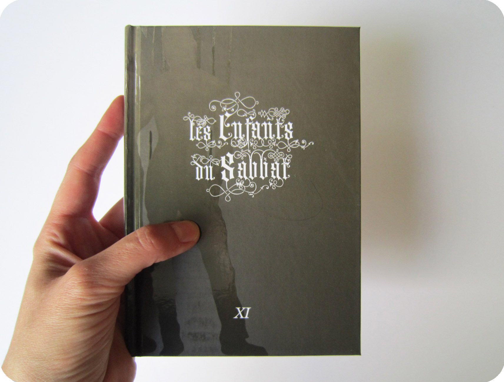
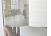

LES ENFANTS DU SABBAT XI, 2010
LES ENFANTS DU SABBAT XI, 2010Coédition ENBA Lyon + ESA Clermont Communauté
+ Creux de l'enfer, Thiers
Catalogue d'exposition collective
collection «mes pas à faire au CREUX DE L'ENFER»
142 pages
Pages 106 à 117


|
||
|  | |
LES ENFANTS DU SABBAT XI, 2010 Coédition ENBA Lyon + ESA Clermont Communauté + Creux de l'enfer, Thiers Catalogue d'exposition collective collection «mes pas à faire au CREUX DE L'ENFER» 142 pages Pages 106 à 117 |
|  |
|